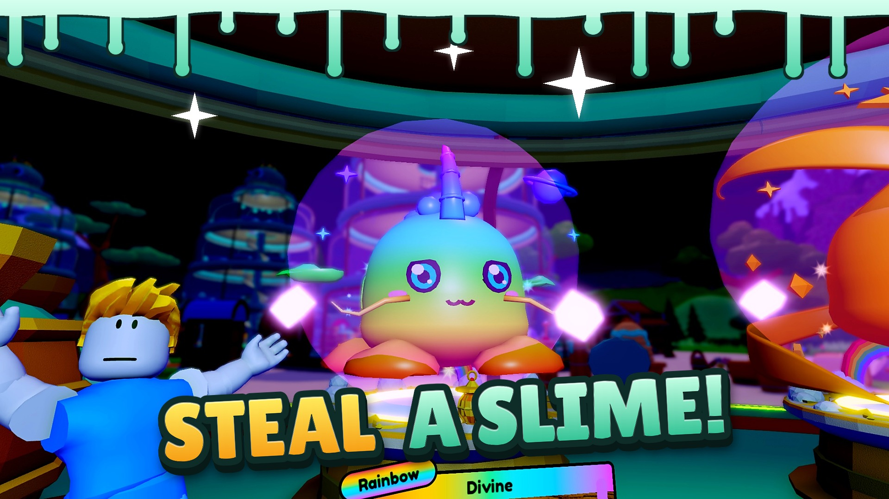
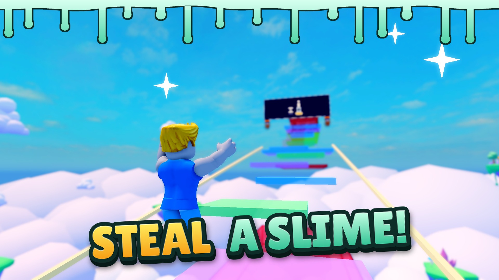
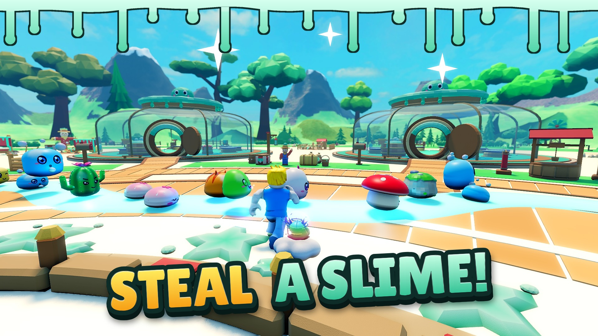
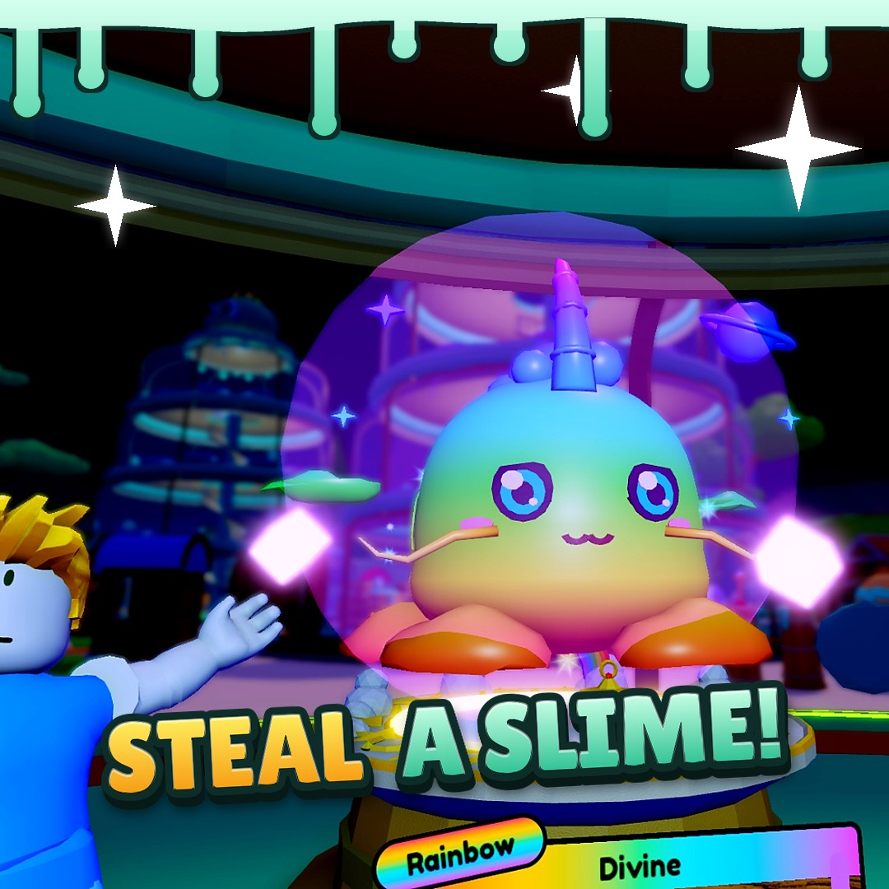

Ad images: pick the ones you want
Eight 1920×1080 ads for the Ads Manager test, all with the main "STEAL A SLIME!" caption like your thumbnail, each with a different scene and hero slime. Every picture is a real moment from the game (hidden Studio, test save). Pick any number; nothing is uploaded.








Square (1:1) crops of three



At phone-ad size (about 300 px wide)

Not made, and why
- REBIRTH = x2: not true; a rebirth tier adds a few percent income, not double.
- SLIME RAIN: in the game it shows as small sparkles; slimes don't fall from the sky, so the picture would mislead.
- Starfall at night: the falling stars are tiny specks in a very dark scene; not exciting at ad size.
- Egg hatching: the burst played before I could freeze it, so the egg ad shows the ready-to-hatch moment.
- Snow weather and a merge-vat hybrid close-up: not shot this round.
Good to know
- The day Rainbow ad and the night ad show the same Kirin slime.
- The chasing owner in the thief ad is a copy of the test avatar in a green shirt (a hidden Studio can't add a second real player); the steal itself is real.
- The player is your own avatar.
- Not checked in Ads Manager's own preview or crop tool.